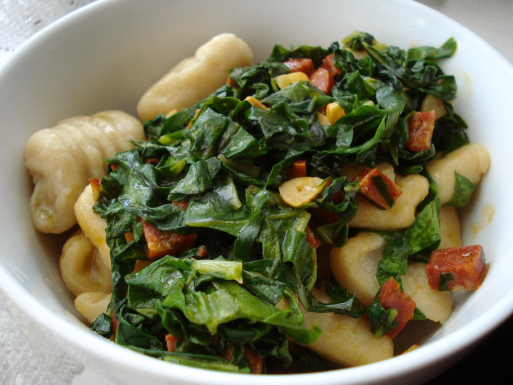

Gnocchi with Squash, Spinach, and Prosciutto

Description
The warm flavors of squash and prosciutto are especially
comforting when paired with tender, oillowy gnocchi. To cut
down on prep work, we use shrink-wrapped, peeled, and seeded
squash halves from the produce section. We tested all types of
supermarket gnocchi fround in the pasta aile works best, but refrigerated
or frozen gnocchi can also be used here. If you don't have any on
hand, penne or campanelle also works well with this recipe.
Ingredients
- 4 tablespoons unsalted butter
- 2 1/4 ounces thinly sliced prosciutto, cut into 1/4
inch strips
- 1 (12- to 16-ounce) peeled and seeded butternut squash
half, cut into 1/2 inch pieces
- 2 tablespoons minced fresh thyme
- 1/2 cup dry white wine
- 1 cup chicken broth
- 1 pound vacuum-packed gnocchi
- Salt and Pepper
- 4 ounces (4 cups) baby spiach
Steps
-
Bring 4 quarts water to boil in a large pot. Meanwhile, melt
1 tablespoon butter in a 12-inch nonstick skillet over medium heat.
Add prosciutto and cook until lightly browned, about 3 minutes. Using
slotted spoon, transfer to paper towel-lined plate.
-
Add remaining 3 tablespoons butter and squash to now-empty skillet and
cook until lightly browned, about 4 minutes. Add thyme and cook
until fragrant, about 30 seconds. Stir in wine and cook until reduced
by half, about 3 minutes. Add broth and cook until slightly thickened,
about 4 minutes.
-
Meanwhile, add gnocchi and 1 tablespoon salt to boiling water and
cook until gnocchi float to surface, about 4 minutes. Reserve 1/4 cup
cooking water, then drain gnocchi and return them to pot. Add squash
mixture and toss to combine. Add spinach and sture until just wilted,
adjusting consistency with reserved cooking water as needed. Stir in
prosciutto, season with salt and pepper to taste, and serve.